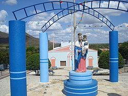

Informações técnicas sobre relevo, população, IDH etc.
| INFORMAÇÕES | |
|---|---|
| Municípios limítrofes | Ibicuitinga , Ocara , Aracoiaba , Itapíuna , Capistrano , Quixadá , Choró |
| Fundação | 13 de abril de 1726 (295 anos) |
| Área total | 877.25 km² |
| Clima | tropical semi-árido |
| PIB | R$ 42.010,299 |
| INFORMAÇÕES TERRITORIAIS | |
|---|---|
| Número de habitantes | 13 353 habitantes |
| Superfície de Ibiretama |
87 725 hectares
877,25 km² (338,71 sq mi) |
| Densidade populacional | 15,2 ha./km² |
| Altitude de Ibitetama | 161 metros de altitude |
| Coordenadas geográficas decimais |
Latitude:
-4.79723
Longitude: -38.7529 |
| Coordenadas geográficas sexagesimais | Latitude: 4° 47' 50'' Sul , Longitude: 38° 45' 10'' Oeste |
| INFORMAÇÕES DO MUNICÍPIO | |
|---|---|
| Endereço da Prefeitura Municipal de Ibaretama |
Ibaretama
Prefeitura de Ibaretama
Rua São José, 1 Ibaretama - CE, 60060-170 Brasil Work +55 85 3105-1369 Fax +55 85 3255-8317 |
| Telefone da prefeitura |
(88) 3439-1119
Internacional: +55 88 3439-1119 |
| Fax |
(88) 3439-1064
Internacional: +55 88 3439-1064 |
| Endereço electrónico da prefeitura |
não disponível
|
| Site oficial do município | Ibaretama.ce.gov.br |
| INFORMAÇÕES DO ADMINISTRATIVAS | ||
|---|---|---|
| Prefeito de Ibaretama | ELIRIA MARIA FREITAS DE QUEIROZ | |
| Partido politico | PSD | |
| INFORMAÇÕES DE TRANSPORTE | |
|---|---|
| Transporte urbano disponível | Metropolitano, Sistema de partilha de bicicletas (Bicicletar) |
| Aeroporto |
Aeroporto Internacional Pinto Martins
116.3 km
Aeroporto de Sobral
160.4 km
Aeroporto Dix-Sept Rosado
215.4 km
|
| INFORMAÇÕES DE DISTÂNCIA A OUTRAS CIDADES | ||
|---|---|---|
| São Paulo : 2253 km | Rio de Janeiro : 2072 km | Brasília : 1582 km |
| Salvador : 910 km | Belo Horizonte : 1764 km | Manaus : 2370 km |
| Curitiba : 2557 km | Fortaleza : 561 km mais perto | Recife : 561 km |
| Belém : 1146 km | Porto Alegre : 3099 km | Guarulhos : 2231 km |
| Campinas : 2205 km | São Luís : 667 km | Goiânia : 1750 km |
| Distância calculada em linha reta! | ||
Conheça mais sobre a história da Ibaretama.
A região entre os rios Piranji, Choró e Sitiá era habitada por índios como os jenipapo, kanyndé,biques, choró, quesito e quixadá.
A história da moderna Ibaretama, como um povoado, começa em 1905 com a doação das terras por particulares, nelas sendo construída uma capela em homenagem a Nossa Senhora Auxiliadora no ano de 1909.
Em 1911, este lugarejo passou a ser distrito com o nome de Serra Azul, depois São Luís e em 1938, Ibaretama. Em toda a sua história foi distrito do município de Quixadá, até quando foi desmembrado em 8 de maio de 1988.
Saiba mais sobre os melhores lugares e o que fazer em Ibaretama.
Dentre os poucos pontos turisticos de ibiretama o que mais se destaca é o dedicado aos religiosos, trata-se da famigerada igreja da matriz de ibiretama onde em frente à mesma estã localizada o maior ponto de referencia do municipio que é a Estátia da Nossa senhora Auxiliadora Padroeira da cidade.

Veja como chegar nos melhores pontos de Ibaretama
Essas rotas servem apenas para fins de planejamento. Obras, trânsito intenso, fatores climáticos ou outros eventos podem fazer com que as condições sejam diferentes dos resultados no mapa, por isso é preciso planejar o trajeto levando tudo isso em conta. Obedeça a todas as sinalizações ou avisos que aparecerem em seu trajeto.